Designing award-winning outdoor gear built to last.
Full-service product design and development consultancy ready to take your project from idea to production, backed by nearly two decades of experience at brands like The North Face and Big Agnes.
01 / Work Selected work
All projects — full portfolio →
Big Agnes Tiger Wall Tents
The best space-to-weight ratio in a semi-freestanding ultralight tent.
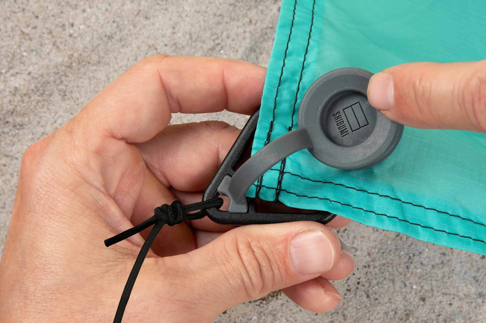
Shibumi Wind Assist Accessory
Patented accessory that anchors the Shibumi Shade on wind-free days.
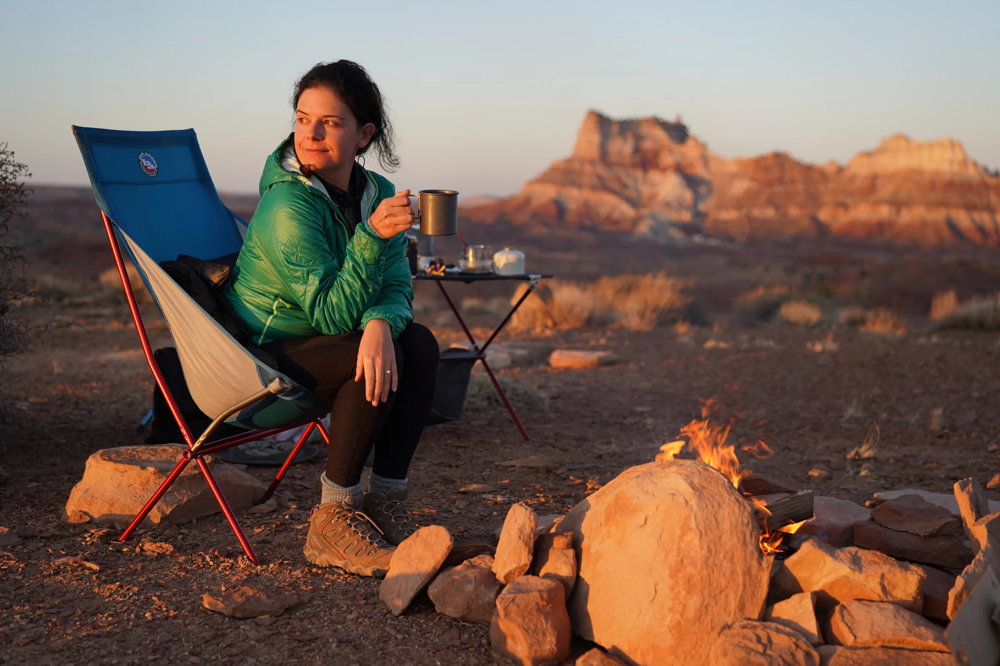
Big Agnes Camp Chair Collection
A unique hubless architecture enables supremely comfortable camp chairs.
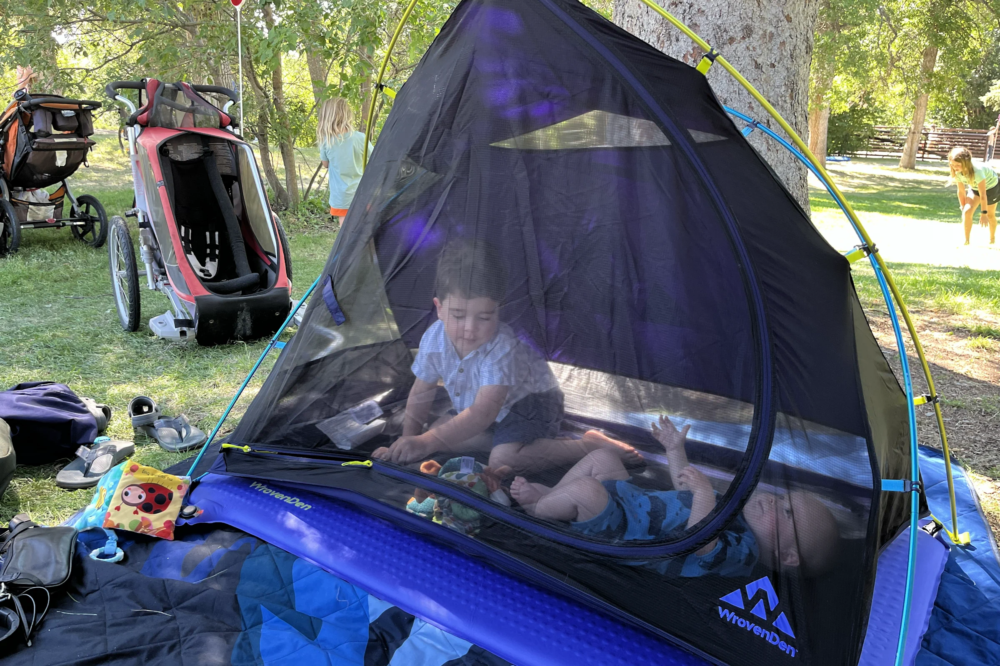
WrovenDen Kids’ Tent
A travel crib alternative for sleep and play.
02 / Services What I can do for you
Whether you already have a well-defined brief or just ambition and a vision, I can help you turn it into something real and remarkable. I work with established brands and entrepreneurs alike to research, design, spec, source, develop, and customize a wide range of technical outdoor hardgoods, including tents, chairs, and travel gear.
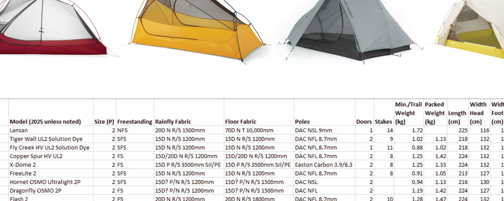
Research & direction
Good design starts with clear direction. I analyze the competitive landscape, gather insight from core users, and help you set targets for size, weight, cost, and features, captured in a brief that guides every decision that follows.
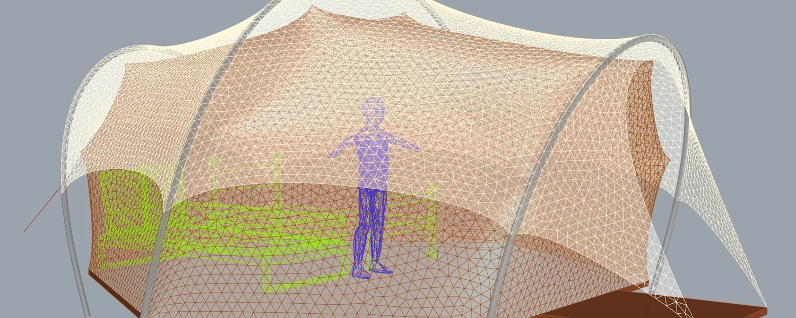
Concept design
The heart of my practice, where ideas find form. I explore broadly through sketching and rapid prototyping, then use computational design tools I’ve built to accurately model the most promising contenders to minimize surprises.
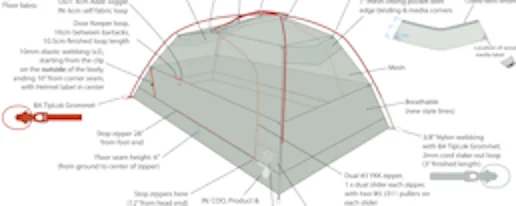
Detailed specifications
Every product needs a blueprint. I craft meticulous tech packs that call out dimensions, materials, features, and construction details, so the right supplier can deliver accurate samples in fewer rounds.
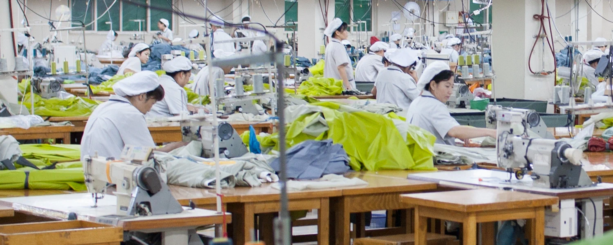
Sourcing
Who builds your product matters. I connect you with tier-one manufacturers and material suppliers worldwide, drawing on a network built over nearly twenty years to find those best suited to your design, volumes, and budget.
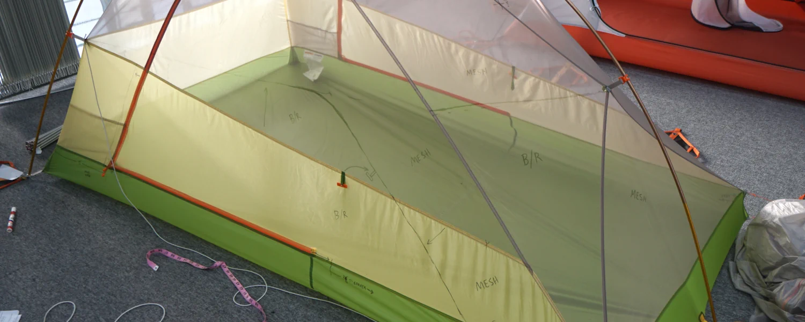
Development to production
The first sample is just the beginning. I guide each round of revisions, helping you balance design intent with cost and manufacturability, while capturing every change in the spec until your product is ready for production.
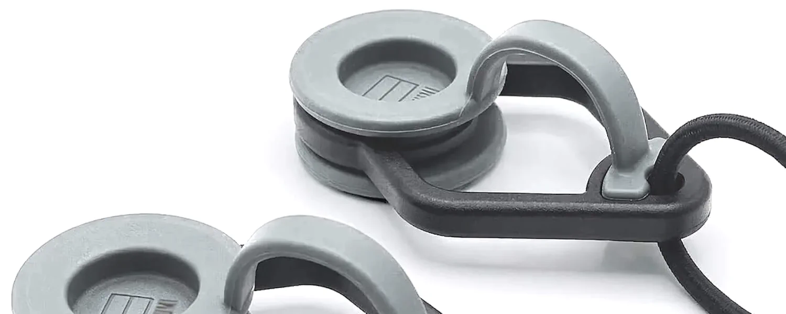
Custom trims & hardware
Customers notice the little things. I elevate products with purpose-built hardware engineered to improve usability, stand up to the elements, and reinforce brand identity, making your gear feel more refined and distinctive.
03 / Process What a typical project looks like
Scope the work
A conversation about your goals shapes a proposal broken into clear phases, so you only commit to the work you need.
Survey the landscape
Market and competitive research, needfinding, and clear targets for weight, cost, and end use lay the foundation for the design space.
Explore concepts
Sketches, physical models, and parametric CAD let us quickly visualize options within that space, which we cull down to a few strong concepts.
Spec and sample
A refined CAD model and a tech pack with material & color stories capture the design intent, and we choose the right supplier to make the samples.
Carry it to production
Prototypes are reviewed and specs revised, locking in dimensions, materials, colors, and features for a production-ready product.
04 / Expertise Product categories & brands
- Ultralight backpacking tents
- Expedition tents & geodesic domes
- Shade structures
- Family camping tents
- Glamping & canvas shelters
- Camp chairs & furniture
- Sleeping pads & bags
- Luggage & backpacks
- Kids’ travel gear
- Custom trims & hardware

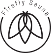
05 / Expert witness Litigation support
I’m available as a technical expert in patent and product liability cases involving fabric-based hardgoods such as tents, portable furniture, backpacks, luggage, and other related consumer products.
- 18+ years designing outdoor equipment
- 250+ commercialized products as sole or lead designer
- 2 U.S. design patents, D941,950 & D1,084,195
Subject matter
-
Portable shelters
Backpacking, expedition, camping, canvas & kids’ tents · sunshades · tensioned-fabric structures
-
Portable furniture
Folding camp chairs · beach chairs · tables & cots · bed frames · playards
-
Sleep systems
Sleeping pads · air mattresses · inflatable pillows · sleeping bags · hammocks
-
Packs & travel goods
Backpacks · luggage & duffels · totes · slings · kids’ travel gear
Most recently, I was retained in a federal patent case over portable camp chairs: three expert reports and a deposition.
Request CV and fee schedule →06 / About Who you’d be working with
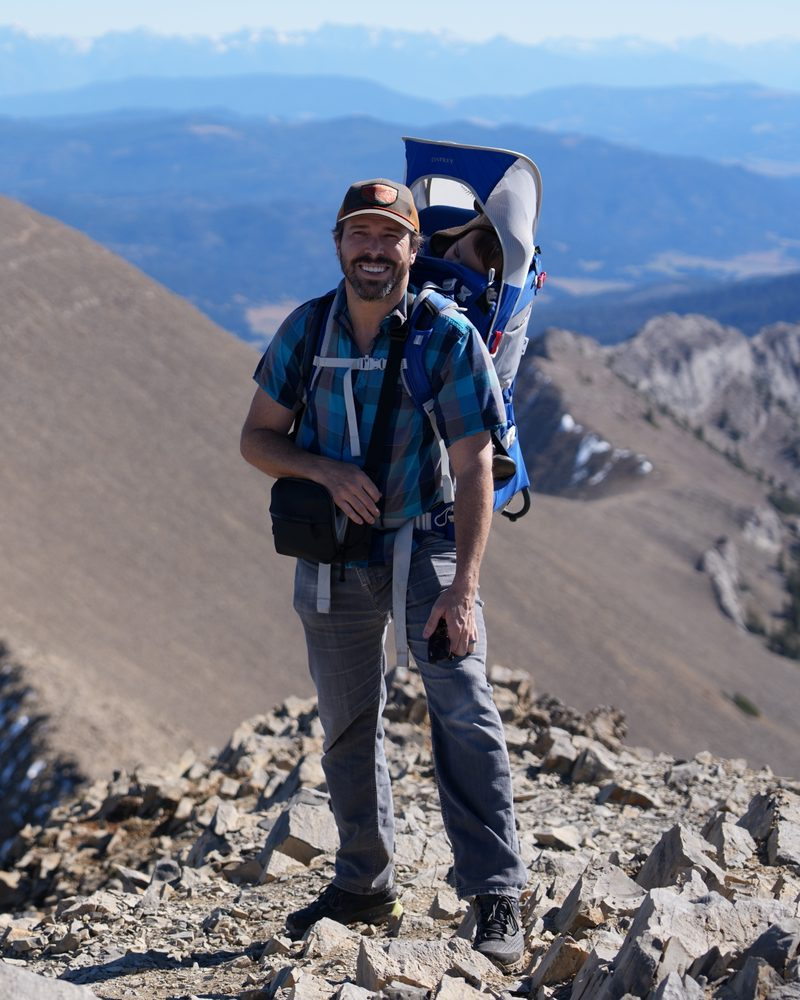
My dad took me backpacking in the Sierra when I was a kid, and I’ve been finding my way back to the mountains ever since.
Those trips stuck with me. After studying product design, I spent two seasons as a liftie in Telluride and knew I wanted to design gear for the outdoors. Getting into the industry took years of odd jobs and applications, until a former TA posted an opening at The North Face. I designed packs, sleeping bags, and luggage there, but tents became my favorite.
Four years in, I was ready for a change. I left with a backpack and a camera and spent nine months in and around the Himalayas, New Zealand’s Southern Alps, and the Andes. A couple of years later, Big Agnes and Steamboat Springs pulled me back. Every mountain town I’ve called home has shaped what I design; it’s where I get inspired and where I test my own gear. I’m still proudest when I spot someone out there using something I designed.
My wife, Gabby, and I met at Outdoor Retailer, when she was looking for a designer for her product idea. We chose Bozeman to raise our two young boys, and I started Isodesic so I could keep designing gear and still be there for them. Most weekends we’re biking the Gallagator or hiking to the M, and I hope the mountains give them what my dad gave me.
Let’s talk about your next idea.
Currently taking on new projects. What can I help you realize?
ideas@isodesic.com